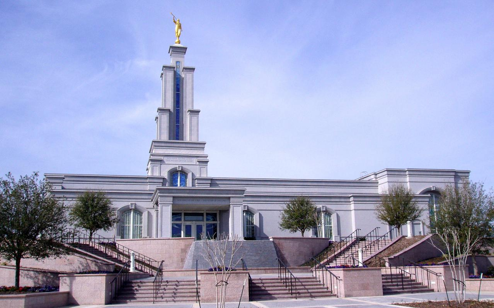

San Antonio, Texas

20080 Stone Oak Pkwy
San Antonio TX 78258-6920
United States
- (1) 210-538-0034
- sanantonio@temples.org
Services
- Clothing Rental
- Cafeteria
- Patron Housing
- Distribution Center
History
- 24 June 2001: Announced
- 29 March 2003: Groundbreaking
- 22 May 2005: Dedicated
Ordiance Schedule
- Baptisms
- Endowments
- Initiatories